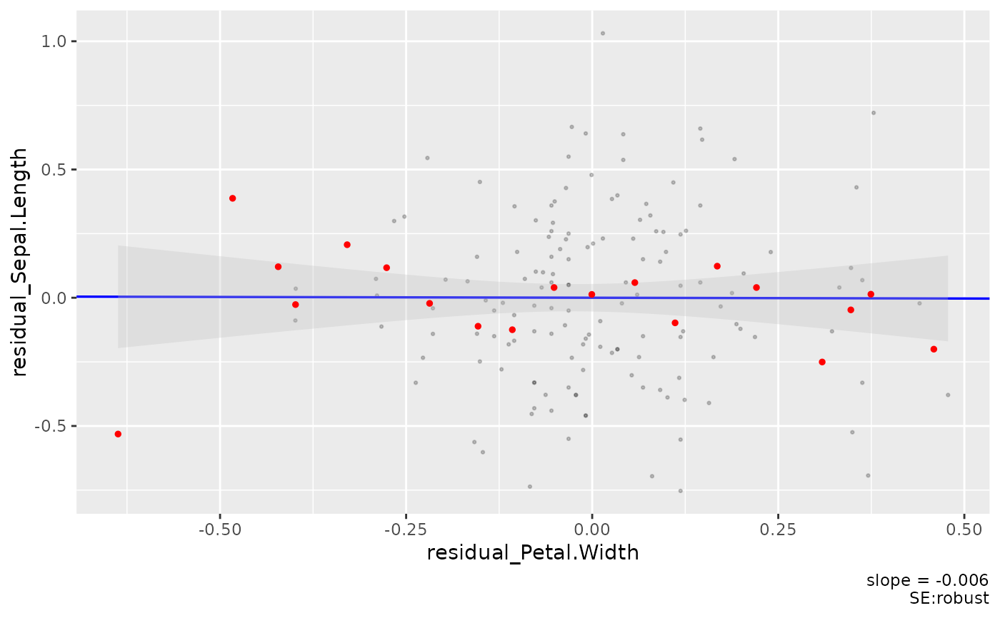

binscatter.RdR implementation of binned scatterplot and CEF plotter, with added options for cluster variance
binscatter(
fmla,
key_var,
data,
plotraw = TRUE,
bins = 20,
rawdata_colour = "black",
rawdata_alpha = 0.2,
rawdata_size = 0.5,
linfit_width = 0.6,
linfit_colour = "blue",
cef_point_size = 1,
cef_point_colour = "red",
ci_colour = "gray",
ci_alpha = 0.3
)FELM formula *as a string*
X axis variable for CEF
dataframe
T if underlying scatterplot should be plotted
number of bins
Colour of Rawdata
Alpha of Rawdata
Size of Rawdata
width of linear fit
colour of linear fit
Size of binscatter points
Colour of binscatter points
Colour of CI ribbon
Alpha of CI ribbon
binscatter('Sepal.Length ~ Petal.Length + Petal.Width|Species', key_var = 'Petal.Width', iris)
#> Loading required package: lfe
#> Loading required package: Matrix
#> Loading required package: stringr
#> Loading required package: ggplot2
